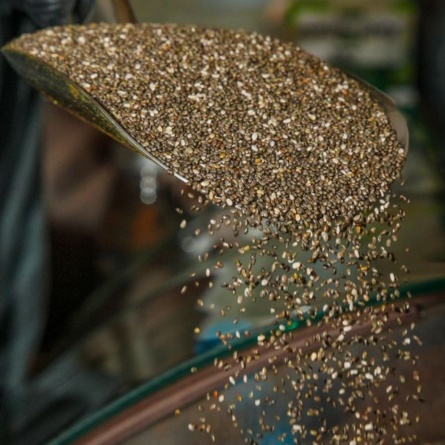
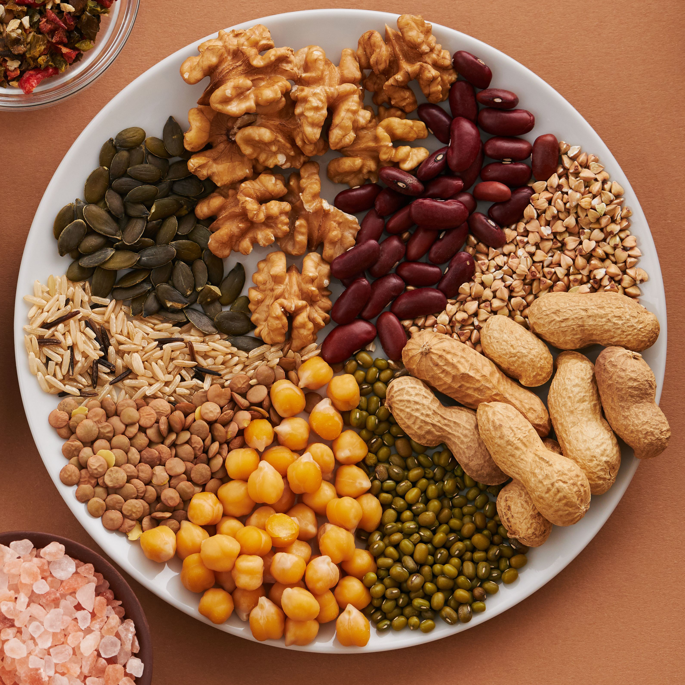

L2-L3 · Flow and Positioned Relationships

Fiber is an immensely important component to a healthy diet. Fiber is great for curbing cravings, weight managements, and digestive health. However there is a great gap in the amount of fiber consumed and what should be consumed by adults. According to a scientific article titled “Closing America’s Fiber Intake Gap” published in the National Library of Medicine, “[N]ational consumption surveys indicate that only about 5% of the population meets recommendations, and inadequate intakes have been called a public health concern” (Quagliani and Felt-Gunderson). With such a staggeringly low amount of adults reaching the recommended consumption of fiber, it is important to determine easy ways to increase fiber in our existing diets. Some easy and versatile ingredients that can increase insoluble fiber consumption include blackberries, farro, and pinto beans.
“[N]ational consumption surveys indicate that only about 5% of the population meets recommendations, and inadequate intakes have been called a public health concern” (Quagliani and Felt-Gunderson).
Breakfast is one meal that can look very different from home-to-home. Some opt for cereal, some a breakfast sandwich, and some skip the whole meal entirely. Whether your team sweet, savory, or nothing, adding 1 cup of blackberries can add 8 grams of fiber (and 2 grams of protein). “Each cup of blackberries contains 8 grams of dietary fiber, which is equivalent to 29% of the daily value (USDA-ARS 2019).” (Xi, Yin, and Samtani). It can work as a topper for your cereal, a small snack, or a part of a smoothie. While some of the insoluble fiber is from the skin of the berry, the seeds are the main fiber component. After a berry good start to the day, swapping a starch for a whole grain can be another big game changer for fiber consumption.
Rice is a popular choice for a meal starch. It’s springy, light, and the flavor is versatile. Seasonings and sauces can completely change the direction of a dish. Farro (unrefined) is a great substitute for rice with its firm springy texture. It can go great in soups, a stir fry, or even a salad bowl. One cup of fiber contains 7-8 grams of fiber (Shephard). That is more than 3 time the amount of fiber found in white rice. Farro does have more flavor in it that white rice—it is more comparable to brown rice with subtle nutty flavors and a more springy texture than light fluffy white rice.
Another rich source of fiber is in legumes. Most legumes have a high amount of fiber (with kidney beans having the most). Pinto beans are also high in fiber and have a flavor more complementary to a wider range of dishes. A study on The Effect of Diet on Cardiovascular Disease and Lipid and Lipoprotein Levels reported that one half of a cup of pinto beans holds a whopping 4.7grams of insoluble fiber. Pinto beans go great as a side, in a burrito, in soup, and more. It is understandable that some people may not have the time or desire to change their diet.
When life gets busy, it is understandable that many may not want to alter their diet (or possibly cannot due to dietary restrictions or allergies). If that is the case, drinking the fiber may be yield the best results. Soaked chia seeds. According to healthline, “A single ounce (28.35 grams) of chia seeds boasts 9.75 gramsTrusted Source of fiber, which is a significant portion of the Daily Value (DV) of 28 gramsTrusted Source per day.” Chia seeds themselves do not really have a flavor, so their soaking liquid can have a big impact on their final taste. Using milk can make them a creamy topper for iced coffee, and them to your yogurt, or if you just want to quickly reach your fiber goals—soak in water overnight, add soaked chia seeds to a cup of water, and drink. Drinking plenty of water with fiber helps the digestion system process the fiber easier.
If you aren’t meeting your daily recommended fiber intake, you aren’t alone. With such a low percentage of adults meeting their fiber goals, there is a pressing need to slowly increase fiber intake with small changes to our diets. Whether you opt for a cup of farro or an ounce of chia seeds, one small change can lead to a positive impact on your digestive health.
L4-L5 · Layers, Shapes, and Fallback

Soluble fiber slows digestion. Insoluble fiber speeds digestion.
According to Quagliani's research article on Closing America’s Fiber Intake Gap, Fiber intake recommendations from the Institute of Medicine (IOM) range from 19 grams to 38 grams per day, depending on gender and age."
An important thing to remember when increasing fiber intake, is to increase it slowly by a couple of grams to avoid any discomfort or digestion issues.